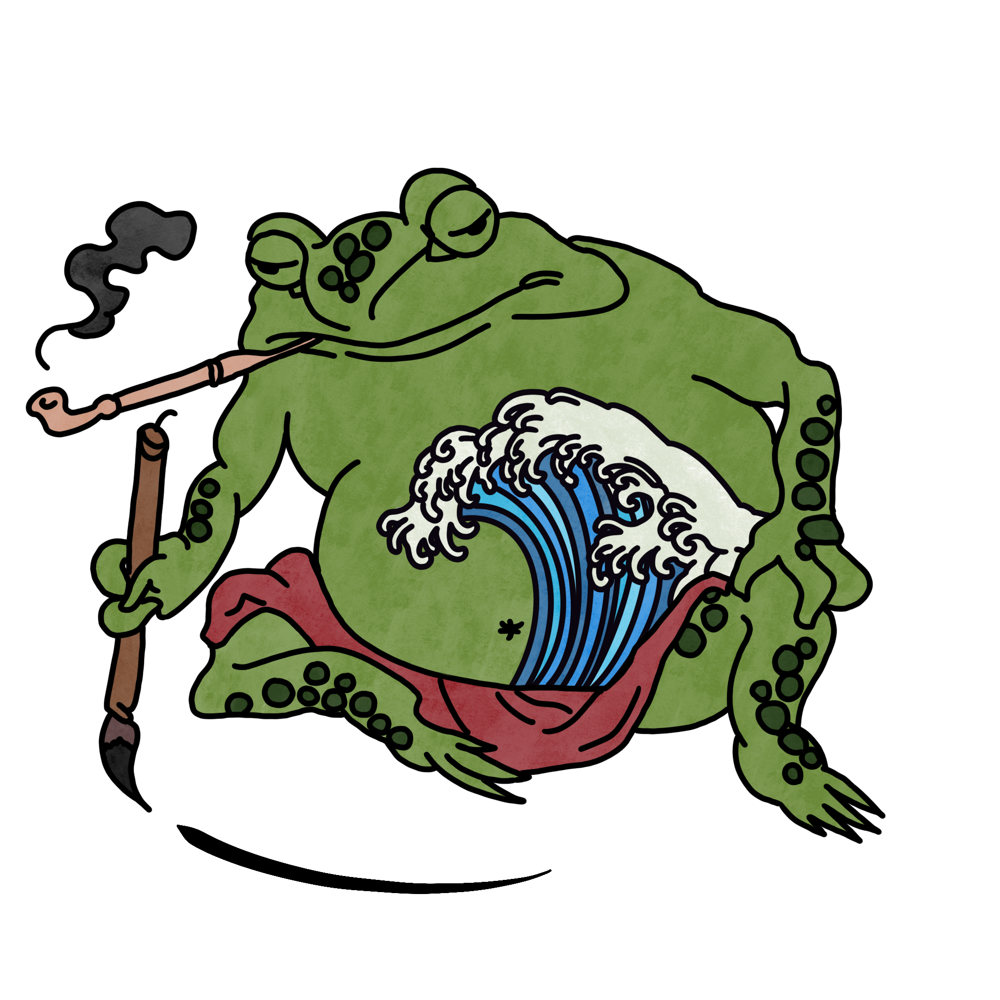
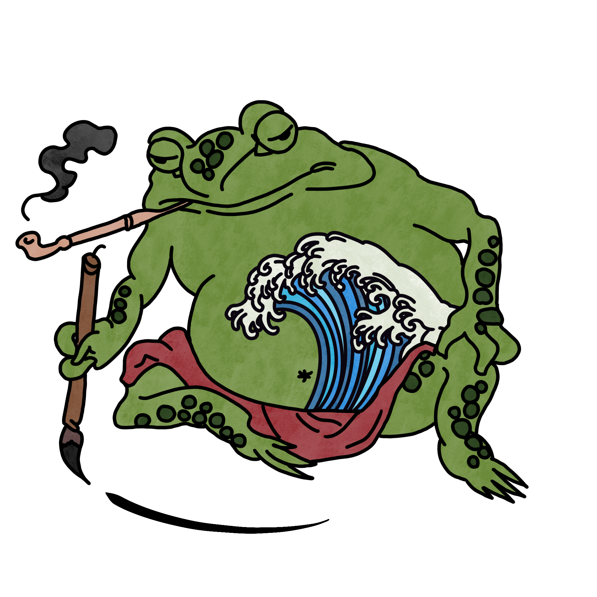

Shell of Its Former Self

Nehézség: V6
Megjegyzés: Ez az út egy replika. A főbb mozdulatokat a floating (V16) inspirálta.
Építő: Beni

Nehézség: V6
Megjegyzés: Ez az út egy replika. A főbb mozdulatokat a floating (V16) inspirálta.
Építő: Beni
